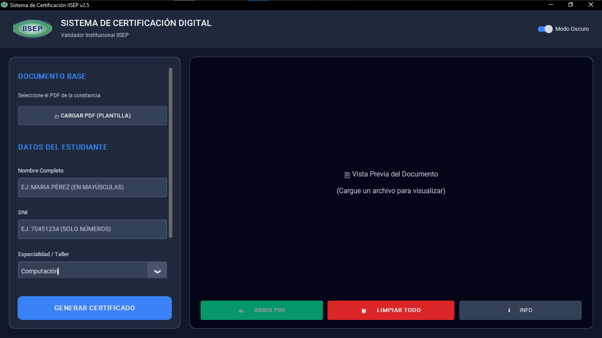
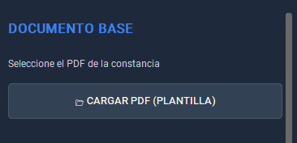
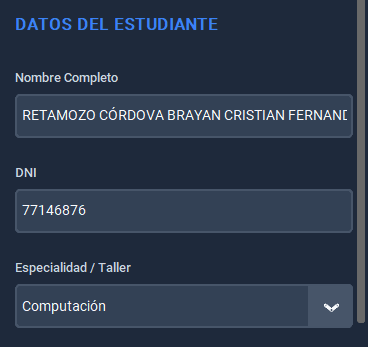

Área de Desarrollo Tecnológico - IISEP
Noviembre 2025
Requisito del Sistema:
Para el correcto funcionamiento del registro en base de datos y la generación del código QR, el equipo debe contar con conexión a internet activa.
1. Interfaz de Usuario
El sistema presenta un diseño oscuro para reducir la fatiga visual. La pantalla principal se divide en dos secciones operativas:
Panel Izquierdo: Controles de entrada (Carga de archivos y Datos).
Panel Derecho: Área de visualización previa del documento.

2. Proceso de Emisión
1 Carga de Plantilla Base
En el apartado "DOCUMENTO BASE", haga clic en el botón CARGAR PDF (PLANTILLA).
Debe seleccionar el archivo PDF que contiene el diseño de fondo del certificado (sin nombres ni fechas).

2 Registro de Datos
En la sección "DATOS DEL ESTUDIANTE", complete la información requerida:
Nombre Completo: Ingrese el nombre. El sistema lo formateará a mayúsculas automáticamente.
DNI: Ingrese el documento de identidad (Solo números).
Especialidad: Seleccione la carrera o taller del listado desplegable (ej. Computación).

3 Generación y Validación
Una vez verificados los datos, presione el botón azul inferior GENERAR CERTIFICADO.
El sistema realizará las siguientes acciones automáticas:
Registrará al alumno en la base de datos institucional (Supabase).
Generará un código QR único vinculado al validador web.
Guardará el archivo final en la carpeta /CERTIFICADOS_LISTOS.
3. Controles Adicionales
Botón
Función
ABRIR PDF
Abre el documento generado recientemente en su visor predeterminado.
LIMPIAR TODO
Reinicia el formulario y la vista previa para procesar un nuevo alumno.
INFO
Muestra información sobre la versión del software.